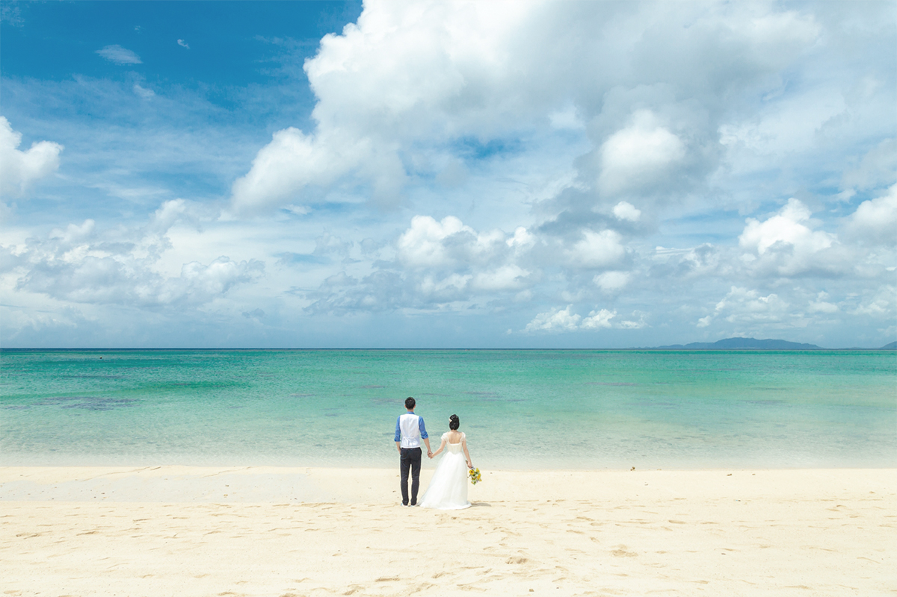
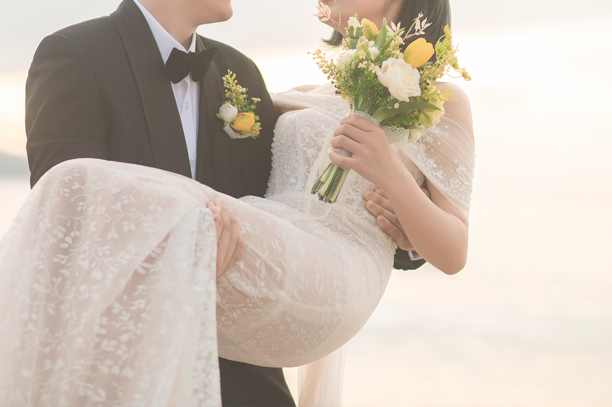
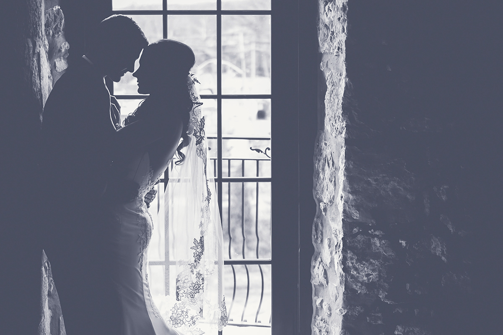

ふたりの物語が、
一番の宝物になる。
実際に kyouritz photo studio で撮影されたカップルのリアルなインタビューと、心温まるドキュメンタリーレポートをご紹介します。
世代やスタイルを越えて残す、
ふたりの原点。
「どんな想いでスタジオを選び、どんな一日を過ごしたのか」。先輩カップルたちのリアルな声をお届けします。撮影の空気感やアルバムの仕上がりをイメージする参考にしてみてください。
「背伸びせず、ふたりらしく笑い合えた時間が、そのまま宝物になりました。」



「SNSで見かけた写真の自然な光と、作り込まれていない空気感に一目惚れしました。まずは雰囲気を知るために無料試着会に参加したのですが、スタッフの皆さんが私たちの趣味や好みをとても楽しそうに聞いてくれて、ここなら安心して任せられると思いました。」（K様ご夫妻・20代）
「最初はガチガチに緊張していたのですが、カメラマンの佐藤さんがずっと気さくに話しかけてくれて、いつの間にかデートをしているような感覚に。波打ち際を走ったり、夕日を眺めたりしている自然な瞬間をたくさん残してもらえて本当に良かったです！」
「データを見た瞬間、自分たちがこんなに優しい表情をしているんだと驚きました。自宅に届いたアルバムを開くたび、撮影日の潮風や笑い声が鮮やかに蘇ります。一生大切にしたい宝物になりました。」
「歴史ある佇まいと静謐な光の中で、夫婦としての原点を刻みました。」
「私たちは派手な結婚式よりも、写真にしっかりとこだわりたいという想いがありました。田中さんの重厚感あるポートレート作品に惹かれ、年齢を重ねても色褪せない写真を残せると思い選びました。」（M様ご夫妻・30代）
「チャペルに差し込む光の美しさと、和装の繊細な色合いを最高のタイミングで捉えていただきました。撮影中も私たちのペースに合わせて優しくリードしてくださり、終始リラックスして楽しむことができました。」
「両親にアルバムをプレゼントしたところ、本当に喜んでくれました。写真一枚一枚にストーリーが感じられて、このスタジオにお願いして心から良かったと実感しています。」



先輩カップルのリアルなお見積り例
「実際にかかる費用感が知りたい」という不安を解消する、オプション込みのリアルな内訳をご紹介します。
ロケーション充実プラン
- ロケーション撮影基本プラン￥21,600
- 土日祝日撮影料金￥5,500
- カメラマン指名料（佐藤）￥5,000
- プレミアム増刷アルバム￥8,800
衣装2着こだわりプラン
- スタジオ撮影基本プラン￥10,800
- 追加ドレスフィッティング￥11,000
- カメラマン指名料（田中）￥5,000
- 平日撮影特典￥0